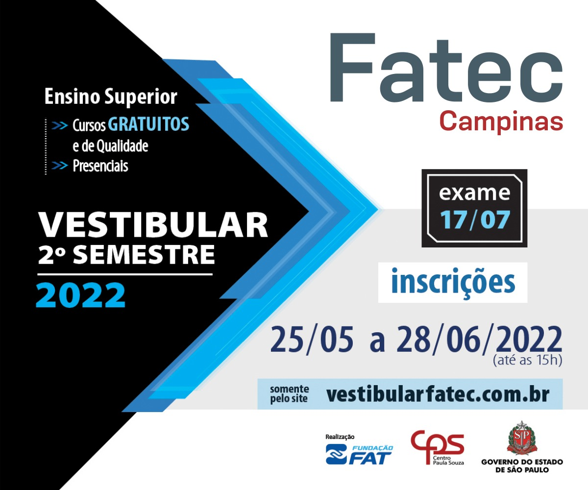
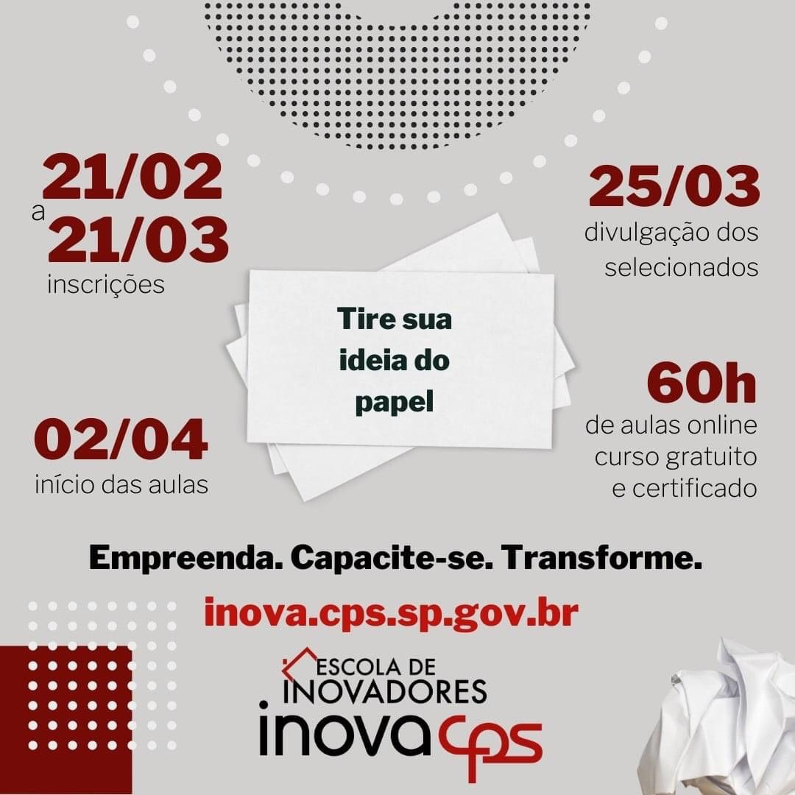

Inscrições abertas para o vestibular 2º semestre 2022

RELAÇÃO DOS CANDIDATOS CONVOCADOS NA 7ª CHAMADA DO VESTIBULAR 1º SEMESTRE DE 2022
RELAÇÃO DOS CANDIDATOS CONVOCADOS NA 7ª CHAMADA DO VESTIBULAR 1º SEMESTRE DE 2022 Para realização da matrícula, o candidato deverá acessar o link enviado por e-mail e inserir no sistema de Matrícula Remota a documentação necessária.
RELAÇÃO DOS CANDIDATOS CONVOCADOS NA 6ª CHAMADA DO VESTIBULAR 1º SEMESTRE DE 2022
RELAÇÃO DOS CANDIDATOS CONVOCADOS NA 6ª CHAMADA DO VESTIBULAR 1º SEMESTRE DE 2022 Para realização da matrícula, o candidato deverá acessar o link enviado por e-mail e inserir no sistema de Matrícula Remota a documentação necessária.
Inscrições INOVA
